|
RBC
- Roda JC (0-2) 17 december 2005
|
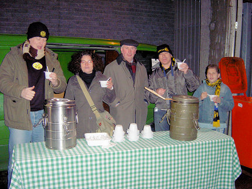
Een zeldzaam hartelijke ontvangst! Bij RBC werd je onthaald op erwtensoep
en bruine bonensoep.
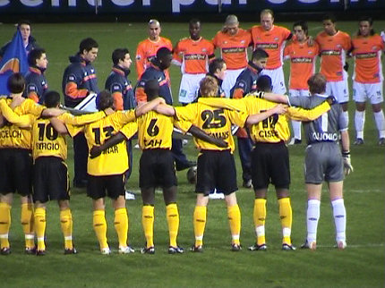
Een minuut stilte voor een overleden jeugdkeeper van RBC.
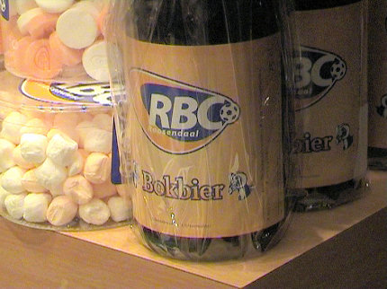
Gastronomisch zit het wel goed in Roosendaal!
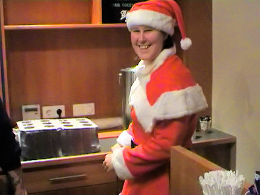
Kerstmupke in het supportershome.
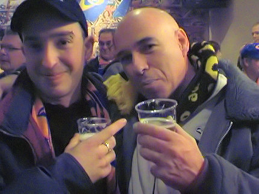
Klein maar gezellig home waar Jupiler van het vat wordt geschonken.

Frits houdt contact met de FP-bus die vanwege een fikse hagelbui een
kleine vertraging heeft opgelopen.
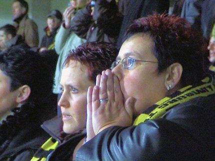
Roda creëerde al gauw een aantal mooie kansen die met name door Cissé
verprutst werden.
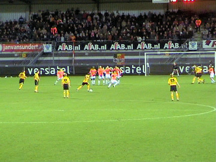
Vrije trap Bodnar. Hij speelt hem even voor zich uit om vervolgens af te
drukken.
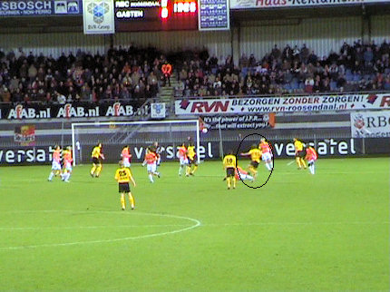
Dit doet hij vanuit de draai waarna de bal snoeihard de kruising in gaat: 0-1,
(20').
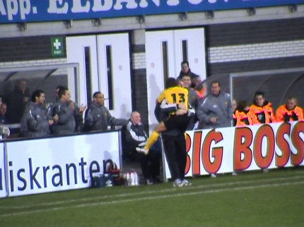
De Hongaar is dolblij en bespringt Roda's sport-arts.
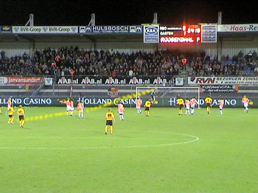
Een nieuwe vrije trap die nog van richting wordt veranderd kan nog maar net
door doelman Volders overgetikt worden.
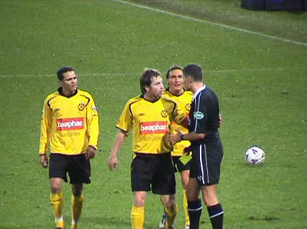
Van Sichem heeft weer een gele kaart getrokken. Het werden er uiteindelijk
twee voor RBC en drie voor Roda. De scheidsrechter floot met name in de
tweede helft opzichtig in Roda's nadeel.
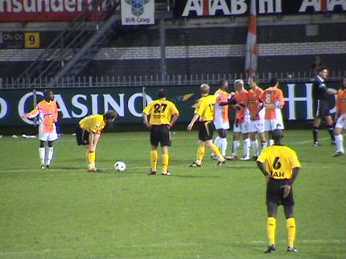
Vlak voor rust is er weer een vrije trap. Van Dijk stroopt zijn sokken vast op.
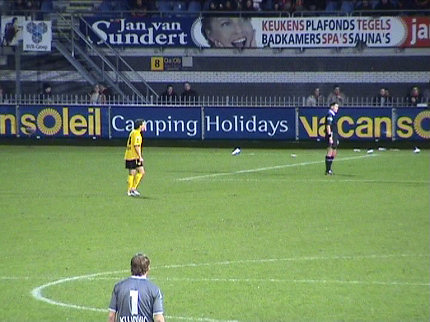
Of gaat Bodnar schieten.....?
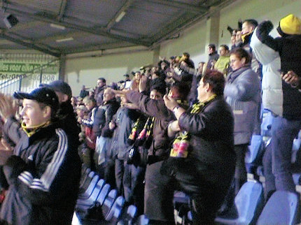
Nee, het is toch Van Dijk die het lauwe Roda-vak in de 43e minuut laat
jubelen voor de 0-2.
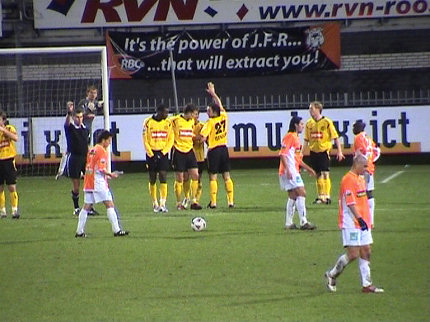
In de tweede helft krijgt Roda nog nauwelijks kansen en neemt RBC
gaandeweg steeds meer het initiatief. Cissé wordt vervangen door Cristiano
die nog duidelijk wedstrijdritme ontbeert en helemaal niks paraat maakt.
Later wordt Bodor vervangen door de anonieme Colinet terwijl in blessuretijd
de tegenvallende Sergio gewisseld wordt voor Senden.
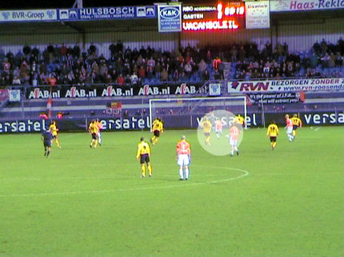
Het laatste kwartier volgt er een belegering van het Rodadoel. Hier gaat
Sillah geheel vrij op Kujovic af. Vladan zit echer goed in de wedstrijd en
houdt de nul.
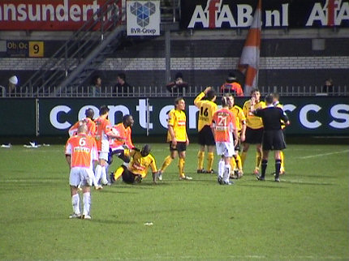
Een waanzinnig moment. Van Dijk heeft geel gehad en RBC maakt zich op
voor een vrije trap. Kah wordt over de grond gesleurd door een RBC-speler.
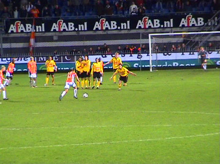
De Roosendaalers blijven doorbeuken op de Roda-defensie, maar de deur
blijft dicht.
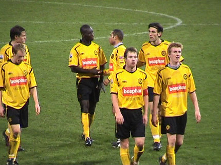
De spelers komen de 150 meegereisde supporters bedanken.
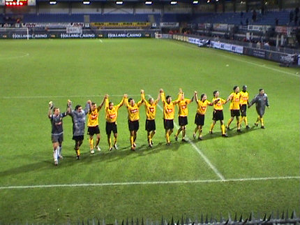
Roda klimt weer een beetje op de ranglijst maar voor RBC lijkt degradatie
bijna onafwendbaar.
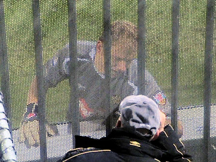
Kujovic neemt nog even de tijd om een praatje met een supporter te maken.
© Koempels Pleasure Dome
|